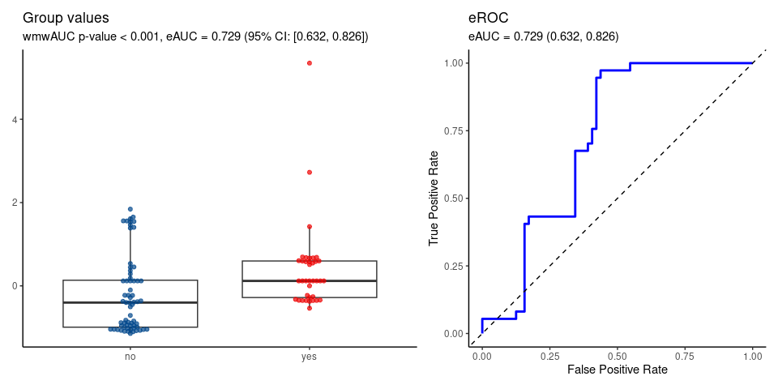
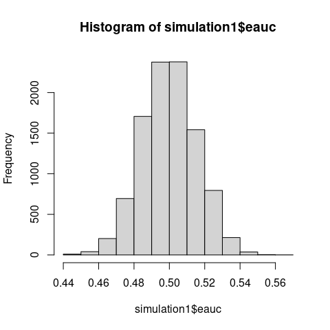
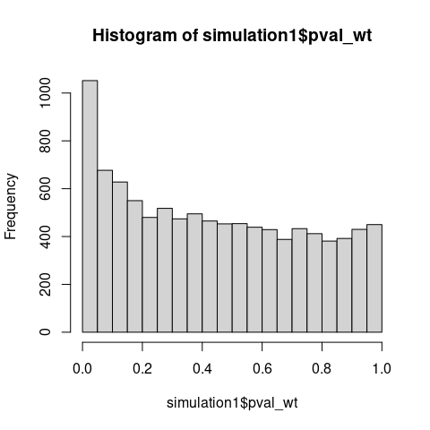
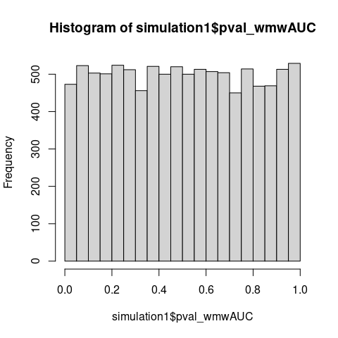
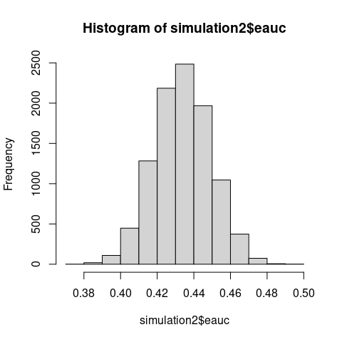
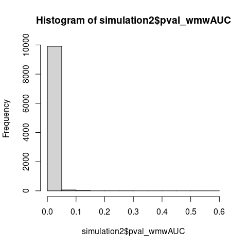
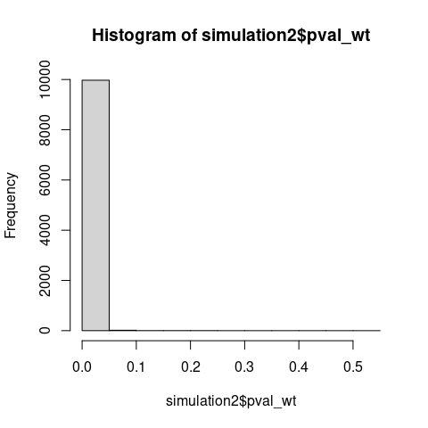

The classical Wilcoxon-Mann-Whitney (WMW) test is calibrated under the null hypothesis . However, the WMW test statistic, when standardized, is the empirical AUC (eAUC), and hence the test in fact assesses the set , which does not match . This incoherence causes that WMW test provides erroneous inferences.
wmwAUC implements a properly calibrated test of based on the WMW statistic; for details, see (Grendár 2025). The package provides both asymptotic inference and two finite-sample bias-correction methods:
Exact Unbiased (EU) Method: Universal approach handling data with arbitrary tie patterns through the mid-rank kernel and exact finite-sample unbiased variance estimation from Hoeffding decomposition theory. Reduces correctly to the continuous case when no ties are present.
Bias-Corrected (BC) Method: Alternative method using individual placement-component bias correction with finite-sample corrections and Welch-Satterthwaite degrees of freedom. Derived for continuous data (Sect. 4 of the paper); the implementation extends this to ties via the same mid-rank kernel as EU, with conservative behavior confirmed by simulation to persist under ties.
The EU method serves as the default implementation, providing:
Universal applicability (handles any data type - continuous, discrete, or mixed)
Exact finite-sample unbiasedness (not asymptotic approximation)
Theoretically principled tie handling through mid-rank kernel
Retained real power at small sample sizes where BC’s power can be close to zero
BC remains available for users who specifically want its more conservative behavior.
Key functions include:
wmwAUC_test(): Main testing function, defaulting to the EU method, with an option to select BC insteadwmwAUC_pvalue_BC(): WMW AUC p-values via the BC methodwmwAUC_pvalue_EU(): WMW AUC p-values via the EU method, valid for any tie patternwmwAUC_pseudomedian_ci(): Confidence interval for the AUC-equalizing shift (pseudomedian), obtained by inverting the test
(The old names wmw_test(), wmw_pvalue(), wmw_pvalue_ties(), and pseudomedian_ci() are not retained as functional aliases. Calling any of them raises an informative error naming the current function to use instead.)
Installation
Install the released version from CRAN:
install.packages("wmwAUC")Or the development version from GitHub:
# install.packages("remotes")
remotes::install_github("grendar/wmwAUC")Example
Real data analyzed by wmwAUC test of no group discrimination.
data(gemR::MS)
da <- MS
# preparing data frame
class(da$proteins) <- setdiff(class(da$proteins), "AsIs")
df <- as.data.frame(da$proteins)
df$MS <- da$MSwmwAUC test of no group discrimination
wmd <- wmwAUC_test(P19099 ~ MS, data = df, ref_level = 'no')
wmd
#>
#> wmwAUC Test of No Group Discrimination (H0: AUC = 1/2)
#>
#> data: P19099 by MS (n1 = 37, n2 = 64)
#> groups: yes vs no (reference)
#> U = 1726, eAUC = 0.729, p-value = 0.000012, method = EU
#> alternative hypothesis for AUC: two.sided
#> 95 percent confidence interval for AUC (delong):
#> 0.632 0.826
AUC-equalizing shift (pseudomedian)
set.seed(123L)
wmd_pm <- wmwAUC_test(P19099 ~ MS, data = df, ref_level = 'no', pseudomedian = TRUE)
wmd_pm
#>
#> wmwAUC Test of No Group Discrimination (H0: AUC = 1/2)
#>
#> data: P19099 by MS (n1 = 37, n2 = 64)
#> groups: yes vs no (reference)
#> U = 1726, eAUC = 0.729, p-value = 0.000012, method = EU
#> alternative hypothesis for AUC: two.sided
#> 95 percent confidence interval for AUC (delong):
#> 0.632 0.826
#>
#> AUC-equalizing shift (pseudomedian):
#> 0.642 [solves P(X < Y + delta) = 0.5]
#> 95 percent confidence interval for the pseudomedian:
#> 0.465 0.934Monte Carlo simulations
Through Monte Carlo analysis of zero-mean heteroskedastic Gaussians and corresponding asymptotic theory, we demonstrate the mismatch between the null of the WMW test and the statistic-implied null set directly: the eAUC concentrates on 0.5 even when , showing that the classical WMW test’s calibration cannot be tracking distributional equality.
Simulation 1
Consider the setting of two zero-mean different-scale gaussians. Then the traditional of the classical WMW test is false and holds.
The Monte Carlo simulation demonstrates that the normalized test statistic which is just eAUC, concentrates asymptotically on 0.5 - the value expected under a true null hypothesis.
If the classical WMW test tested distributional equality, the test statistic should not concentrate on its null value when distributions clearly differ.
Also note that under , p-values should concentrate near zero, yet the observed distribution is nearly uniform with a slightly elevated first bins, consistent with testing a true null hypothesis () using miscalibrated variance estimation.
#############################################################################
#
# Simulation 1: H0: F=G is erroneously too broad
#
#############################################################################
#
# This simulation takes several minutes to complete
# N = 10000
# n = 1000
# set.seed(123L)
# pval_wt = pval_wmwAUC = eauc = numeric(N)
# for (i in 1:N) {
#
# x = rnorm(n, sd = 0.1)
# y = rnorm(n, sd = 3)
# # wilcox.test() of H0: F = G
# wt = wilcox.test(x, y)
# pval_wt[i] = wt$p.value
# # wmwAUC_test() of H0: AUC = 0.5
# pval_wmwAUC[i] = wmwAUC_pvalue_BC(x, y)
# # eAUC
# eauc[i] = wt$statistic/(n*n)
# #
# }
data(simulation1) # List eauc, pval_wt, pval_wmwAUC
#
Empirical AUC centered at 0.5 despite .

Traditional p-values under should concentrate near 0.

Correct p-values for testing .
Simulation 2
The two zero-mean different-scale gaussians setting does not satisfy the traditional of the stochastic dominance. But, as proved by Van Dantzig in 1951, the WMW statistic is consistent for the broader . The following MC simulation demonstrates the consistency.
#############################################################################
#
# Simulation 2: H1: F stoch. dominates G is too narrow
# WMW is consistent for broader H1: AUC != 0.5
#
#############################################################################
#
#
# This simulation takes several minutes to complete
# N = 10000
# n = 1000
# set.seed(123L)
# pval_wt = pval_wmwAUC = eauc = numeric(N)
# for (i in 1:N) {
# #
# # gaussians with different location and scale
# # does not satisfy stochastic dominance
# x = rnorm(n, 0, sd = 0.1)
# y = rnorm(n, 0.5, sd = 3)
# # wilcox.test H0: F = G vs H1: (F stochastically dominates G) OR (G stochastically dominates F)
# wt = wilcox.test(x, y)
# pval_wt[i] = wt$p.value
# # wmwAUC_test H0: AUC = 0.5 vs H1: AUC neq 0.5
# pval_wmwAUC[i] = wmwAUC_pvalue_BC(x, y)
# # eAUC
# eauc[i] = wt$statistic/(n*n)
# #
# }
data(simulation2) # List of eauc, pval_wt, pval_wmwAUC
# WMW detects broader alternatives than traditional stochastic dominance


Acknowledgements
AI-assisted code generation via Claude Pro by Anthropic was used in development. All generated content was verified, tested, and enhanced by the package author.